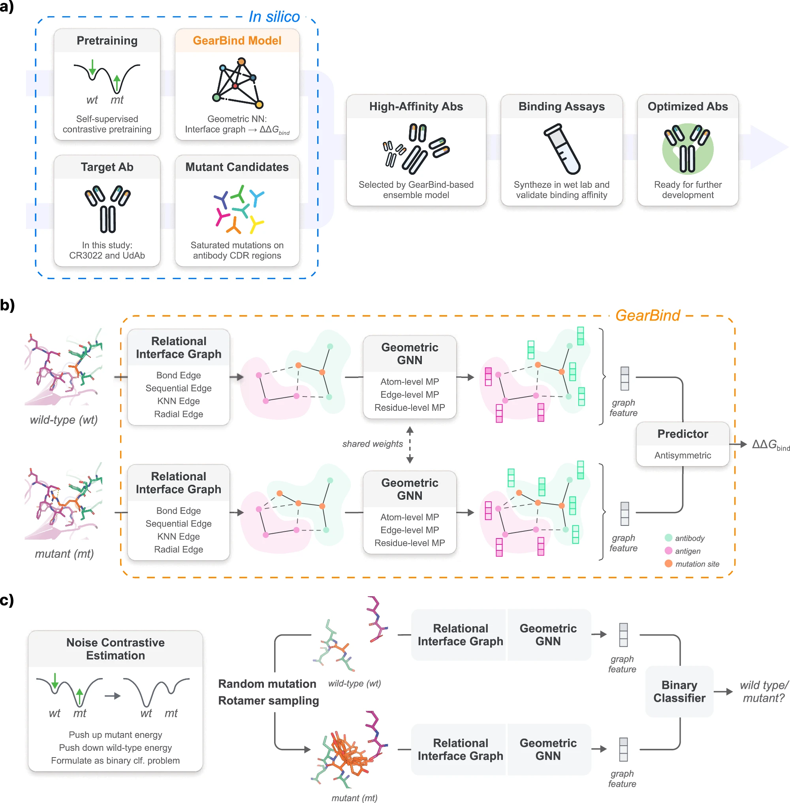

抗体亲和力成熟的设计
2024-10-20T17:35:16+08:00 | 5 分钟阅读 | 更新于 2024-10-20T17:35:16+08:00

本文提出一个可预训练的深度神经网络，利用多层次几何信息传递来模拟复杂的蛋白质-蛋白质相互作用。
考虑到可能突变的组合搜索空间，抗体的互补决定区（complementarity-determining region，CDR）上通常有50-60个氨基酸残基，这些区域在体内具有高度变异性，并贡献了大部分结合自由能ΔGbind。以往的研究显示，成功的亲和力成熟往往需要多次点突变。对抗体CDR区域中成千上万种可能的点突变组合（60个残基 × 每个残基19种变异）进行实验是非常困难的，甚至是不可能的。因此，迫切需要一种快速且准确的计算方法来缩小搜索空间。其实这一步如果有生物的自然选择参与就会简化很多，即体内实验。不必要每一种都去体外实验纯化，或者大规模筛选。
许多机器学习方法将亲和力成熟问题表述为基于结构的结合自由能变化的预测问题。
- 大多数现有方法对原子级几何信息的建模方式是间接的或不完整的，如使用手工特征或残基级特征。无法充分解决侧链原子之间的复杂相互作用。
- 机器学习模型需要大量的配对结合亲和力数据，以确保其准确性和可靠性。公开蛋白质-蛋白质结合自由能变化数据集SKEMPI v2.0，仅包含348个蛋白质复合物上的7085个ΔΔGbind测量值，这一数据量相比于像AlphaFold2和ESM2等基础蛋白质模型的训练集规模显得微不足道。
GearBind 结构与信息传递流程总结
GearBind 的核心是通过多关系界面原子图捕捉蛋白质复合物的接触界面结构信息，并通过图神经网络（GearNet）进行信息传递，最终用于 ΔΔGbind 预测任务。具体流程如下：
1. 构建界面原子图
- Sequential Edge：
如果两个原子在氨基酸序列中的距离小于 3，形成序列边，边种类（-2, -1, 0, 1, 2）取决于相对位置。 - Radial Edge：
两个原子空间距离小于 5Å 时形成。 - KNN Edge：
每个原子与最近的 10 个邻居形成边，确保图的连通性。 - Bond Edge：
反映化学键的连接。
2. 信息传递与线图构建
- 使用 GearNet 在界面图上传递信息，获取原子层表示。
- 将每条边视为“线节点”，若两个边共享顶点则形成“线边”，构建“线图”，捕捉边级别的相互作用。
3. 多层次信息传递
- 在聚合残基的原子和边表示后，通过几何图注意力层在残基之间传递信息，整合多粒度的结构信息。
4. 自监督预训练
- 使用 CATH 数据库中的无标签蛋白质结构进行预训练。
- 模型通过对比原生结构与随机突变结构的能量状态，将任务建模为二分类问题，提高泛化能力。
该方法有效避免了数据不足导致的过拟合问题，使其在 ΔΔGbind 预测中表现出色。
GearBind 关键架构设计的性能基准测试
为了评估 GearBind 中关键架构设计的贡献，作者在 SKEMPI 数据集上对五个 GearBind 变体进行了基准测试，这些变体分别排除了 GearBind 的一些成分（如关系边、残基层）。
1. 性能下降分析
- 排除边信息传递：
Spearman 相关系数下降 13%。 - 排除残基层信息传递：
Spearman 相关系数下降 3%。结论：这表明结合多层次信息进行特征提取的重要性。
2. 侧链原子建模的重要性
- 排除界面图中的侧链原子：
Spearman 相关系数下降 15%。结论：明确建模全原子结构对性能提升至关重要。
3. KNN 图的影响
- 用 KNN 图替换多关系界面图：
Spearman 相关系数大幅下降 23%。结论：多关系图构建策略是 GearBind 的关键组成部分。
4. 使用 RGCN 的效果
- 在多关系图上训练简单的 RGCN 模型：
- Spearman 相关系数相比 GearBind 下降 9%。
- 但相比 Bind-ddG 提高了 2%。
结论：虽然简单 RGCN 无法完全替代 GearBind，但其性能仍优于 Bind-ddG。
这些测试结果表明，GearBind 的多关系图构建策略和结合多层次信息的特征提取方案对模型性能至关重要。
GearBind使用说明
GearBind是用于预测蛋白-蛋白结合亲和性变化（ddG_bind）的预训练几何图神经网络模型。它采用对比学习在CATH上进行预训练，并在SKEMPI数据集上通过回归损失进行微调。代码基于PyTorch和TorchDrug框架，可以支持多GPU或多台机器的训练和推理。
Conda安装
conda install pyg pytorch=1.8.0 cudatoolkit=11.1 torchdrug -c pyg -c pytorch -c conda-forge
conda install rdkit easydict pyyaml biopython gdown -c conda-forge
Protein Inference
使用GearBind进行推理的步骤以HER2和CR3022蛋白为例：
- 下载预训练模型检查点文件至
./checkpoints目录。cd checkpoints gdown 1nFEjbjdlRWFwYz7LUNv_D6oLnEsZ5beJ unzip new-gearbind-model-weights.zip mv new-gearbind-model-weights/*.pth ./ rm -rf new-gearbind-model-weights cd .. - 配置文件位于
./config/predict目录下。可以使用以下命令进行推理：推理时间约为2分钟，推理结果将存储于# 在CR3022数据集上运行GearBind-P模型 python script/predict.py -c config/predict/CR3022_GearBindP.yaml # 在HER2数据集上运行GearBind模型 python script/predict.py -c config/predict/HER2_GearBind.yamlresults目录下。
自定义蛋白复合物推理
如需对自定义蛋白复合物进行推理，请按以下步骤操作：
- 使用FoldX准备数据集。
- 编写自定义数据集类，参考
dataset.HER2和dataset.CR3022。 - 通过修改配置文件来添加一个新的
.yaml文件。
SKEMPI预处理
运行以下命令可以从原始数据中处理SKEMPI数据集：
python script/process_skempi.py --csv-path $SKEMPI_CSV_PATH --pdb-dir $SKEMPI_PDB_DIR --output-csv-path $PROCESSED_SKEMPI_CSV_PATH --output-pdb-dir $PROCESSED_SKEMPI_PDB_DIR --no-repair
其中：
$SKEMPI_CSV_PATH：原始SKEMPI CSV文件的路径。$SKEMPI_PDB_DIR：包含原始SKEMPI PDB文件的目录。$PROCESSED_SKEMPI_CSV_PATH：处理后的SKEMPI CSV文件的路径。$PROCESSED_SKEMPI_PDB_DIR：存储处理后的SKEMPI PDB文件的目录。
处理后的SKEMPI数据集和所有模型预测结果可以在data/skempi_v2_with_all_results_0415.csv中找到。